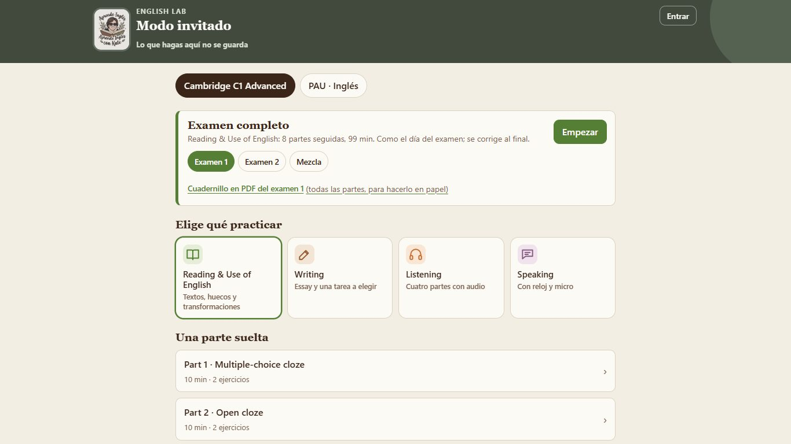
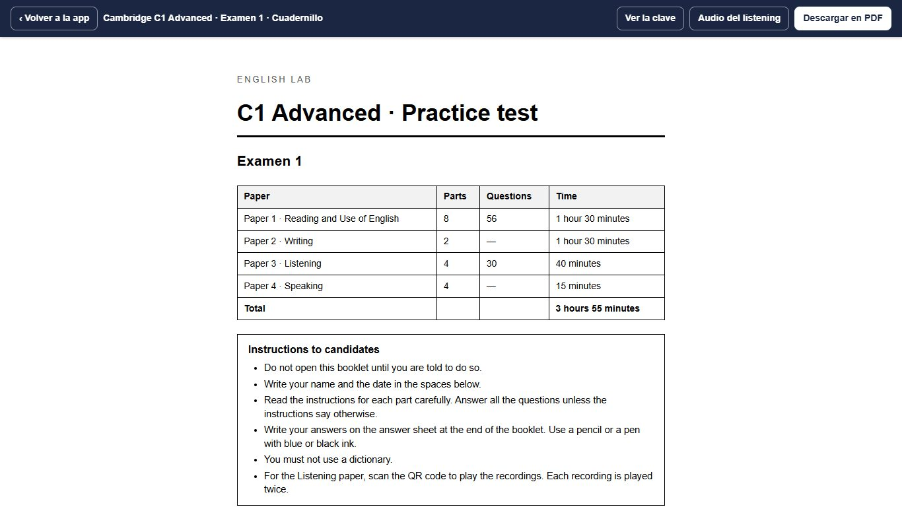

+ Muy fácil la primera vez.
− Lento para quien lo usa cada semana.
+ Se ve el PDF mientras eliges; cómodo en PC; atajos.
− Más trabajo de maquetación; en móvil se apila.
+ Un clic y examen hecho.
− Poco control; hay que añadir «ajustar con detalle».
Elección: B con los botones de C arriba (empezar de una plantilla y afinar viendo el PDF). Si Adam prefiere otra, se cambia en el bloque 3.